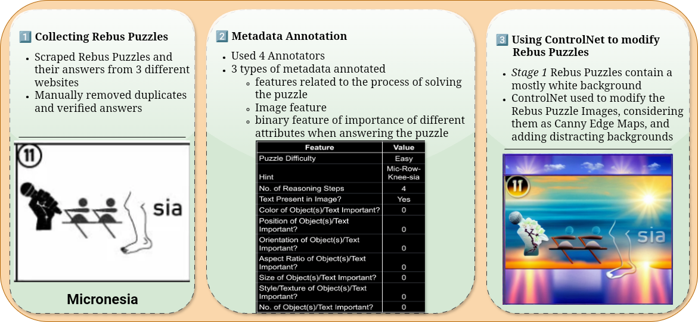
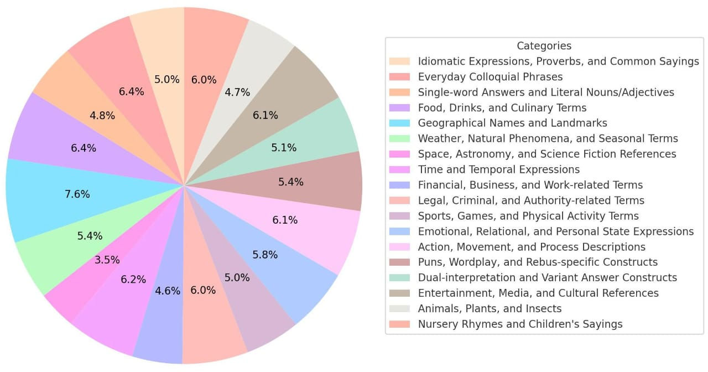
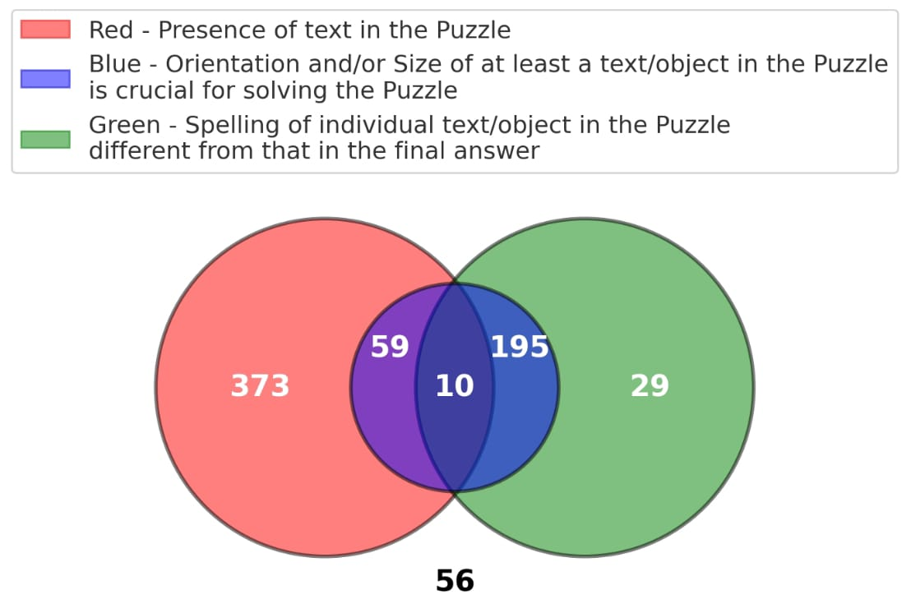
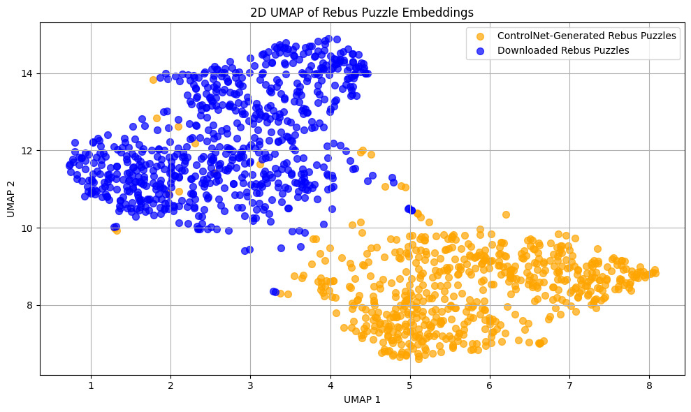

Dataset and Examples
The |🔄 🚍| dataset contains puzzles like the following example, where visual and textual elements combine to form meaningful words or phrases.

Understanding Rebus Puzzles requires multi-step reasoning, linguistic interpretation, commonsense knowledge, and symbolic understanding, posing a unique challenge for Vision-Language Models (VLMs). In this work, we introduce |🔄 🚍| (Rebus Puzzle for the word "Rebus") — a large and diverse benchmark comprising 1,333 English Rebus Puzzles across 18 categories such as idioms, food, and culture. We further propose RebusDescProgICE, a compute-efficient framework combining unstructured and structured reasoning via in-context learning, improving puzzle-solving accuracy by up to 30% for open-source VLMs. We release our dataset, evaluation protocols, and results to enable systematic study of visual-linguistic reasoning through wordplay.
The |🔄 🚍| dataset contains puzzles like the following example, where visual and textual elements combine to form meaningful words or phrases.
The |🔄 🚍| dataset was curated in three stages: (1) collecting puzzles from online sources, (2) annotating metadata such as difficulty and reasoning features, and (3) using ControlNet to generate stylistic variations with visual distractions.
Our dataset spans 18 categories, visualized below.
Feature-level metadata distribution captured through a Venn diagram:
UMAP visualization of puzzle embeddings highlighting stylistic diversity between original and ControlNet-generated samples:
RebusDescProgICE integrates natural language-based descriptions and programmatic reasoning in a hybrid prompting setup. This model-agnostic method enhances VLM reasoning by selecting in-context examples through similarity-based retrieval and combining structured (VisProg-style) and unstructured reasoning components.